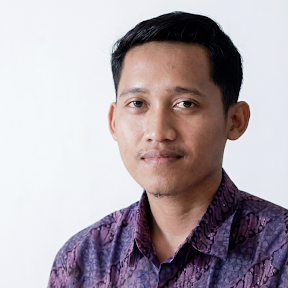

Peran Teknologi Informasi dalam Dunia Kerja
Teknologi informasi membantu perusahaan menjalankan aktivitas secara lebih efektif. Pengelolaan teknologi yang baik juga membutuhkan kemampuan adaptasi dan penyelesaian masalah.
Saya bekerja di bidang teknologi informasi di PT Rosalia Indah Transport dan sedang menempuh pendidikan S1 Ilmu Komunikasi di Universitas Terbuka. Saya memiliki ketertarikan pada teknologi, komunikasi, dan perkembangan dunia digital.

Mengenal latar belakang dan perjalanan saya.
Perkenalkan, saya Wangga Setiyawan. Saya merupakan individu yang memiliki minat pada bidang teknologi informasi dan komunikasi. Saat ini saya bekerja di bidang Information Technology (IT) pada PT Rosalia Indah Transport sekaligus menjalani pendidikan S1 Ilmu Komunikasi di Universitas Terbuka.
Dalam dunia kerja, saya tertarik pada pemanfaatan teknologi untuk mendukung kebutuhan perusahaan, pemeliharaan sistem dan perangkat, serta penyelesaian berbagai permasalahan teknis. Saya memahami bahwa pekerjaan di bidang IT membutuhkan ketelitian, kemampuan analisis, dan kemauan untuk terus belajar.
Melalui pendidikan Ilmu Komunikasi, saya juga mengembangkan pemahaman mengenai komunikasi interpersonal, komunikasi organisasi, serta penyampaian informasi secara efektif.
Saya percaya bahwa teknologi dan komunikasi merupakan dua hal yang saling mendukung dalam lingkungan profesional. Ke depannya, saya ingin terus mengembangkan kemampuan dan memberikan kontribusi positif dalam dunia kerja.
Ketertarikan pada teknologi informasi, sistem komputer, dan dukungan teknis.
Mahasiswa S1 Ilmu Komunikasi Universitas Terbuka.
Terus belajar dan mengembangkan kemampuan profesional.
Perjalanan dan pengalaman profesional saya di bidang teknologi informasi.
Bekerja di bidang teknologi informasi pada perusahaan transportasi. Memiliki pengalaman dalam mendukung kebutuhan teknologi dan sistem informasi perusahaan untuk menunjang aktivitas operasional.
Pengalaman ini memberikan pemahaman mengenai pentingnya koordinasi, komunikasi, ketelitian, serta penyelesaian permasalahan teknis di lingkungan kerja.
Memiliki pengalaman dalam bidang maintenance support IT, khususnya mendukung pemeliharaan perangkat dan kebutuhan teknologi informasi.
Pengalaman ini memberikan pemahaman mengenai perawatan perangkat teknologi, dukungan teknis, ketelitian dalam bekerja, serta penanganan kendala untuk membantu kelancaran aktivitas operasional.
Memiliki pengalaman di bidang maintenance IT service dengan fokus pada dukungan dan pemeliharaan layanan teknologi informasi.
Pengalaman ini menjadi bekal dalam memahami pentingnya pemeliharaan sistem dan perangkat, pelayanan teknis, serta upaya menjaga agar kebutuhan teknologi dapat berjalan dengan baik.
Program Studi S1 Ilmu Komunikasi
Jenjang Pendidikan: Sarjana (S1)
Fokus pembelajaran meliputi komunikasi interpersonal, komunikasi organisasi, komunikasi digital, hubungan masyarakat, dan teori komunikasi.
Bidang keterampilan yang saya pelajari dan kembangkan.
Beberapa topik yang menarik untuk saya pelajari.
Teknologi informasi membantu perusahaan menjalankan aktivitas secara lebih efektif. Pengelolaan teknologi yang baik juga membutuhkan kemampuan adaptasi dan penyelesaian masalah.
Komunikasi yang baik membantu koordinasi, memperjelas informasi, dan membangun hubungan profesional antarbagian.
Perkembangan digital menuntut kita untuk terus belajar, mengikuti perubahan, dan meningkatkan kemampuan agar siap menghadapi tantangan masa depan.
Saya ingin terus meningkatkan kemampuan di bidang teknologi informasi dan komunikasi. Saya berharap pengalaman kerja dan pendidikan yang saya jalani dapat menjadi bekal untuk memberikan kontribusi yang lebih baik dalam dunia profesional.
Terbuka untuk berbagi pengalaman, bertukar informasi, dan membangun relasi profesional.
Email: wanggasetiyawan@gmail.com
LinkedIn: Kunjungi Profil LinkedIn